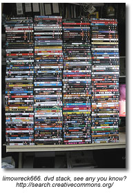

Ethical Use of Information
Understanding Copyright
At what point do concerns about safety become a fence preventing our students from participating in an increasingly flat world? Putting the ‘social’ into social networks allows us to freely exchange information. But with the free exchange of information comes the responsibility of how we share it, and how we give credit to the author of that information.
Check out this video, “A Fair(y) Use Tale” and learn some history of copyright
In the school library and classroom, we are often faced with the copyright challenges of when it is acceptable to copy something and how much of an item [book, website, music etc] we can copy. Faced with declining budgets and little time, we are tempted to go ahead and make the copies. But with the advent of file sharing, downloading and RSS, we must acknowledge and teach the ethics of information gathering and sharing.
Background on Canadian Copyright Legislation
Copyright Matters (the orange little booklet you should all have in your school)
Internet Citizenship from Media Awareness Network - overview and a list of links with more information about copyright and plagiarism.
Canadian Copyright Information - a set of links from Manitoba Education
Copyright Confusion
The Cost of Copyright Confusion for Media Literacy (pdf - 17 pages)
From the Executive Summary:
The fundamental goals of media literacy education—to cultivate critical thinking about media and its role in culture and society and to strengthen creative communication skills—are compromised by unnecessary copyright restrictions and lack of understanding about copyright law, as interviews with dozens of teachers and makers of media literacy curriculum materials showed.
The Generational Divide in Copyright Morality - David Pogue of the New York Times describes a discussion on copyright morality with college students:
Recently, however, I spoke at a college. It was the first time I’d ever addressed an audience of 100 percent young people. And the demonstration bombed.
In an auditorium of 500, no matter how far my questions went down that garden path, maybe two hands went up. I just could not find a spot on the spectrum that would trigger these kids’ morality alarm. They listened to each example, looking at me like I was nuts.
Finally, with mock exasperation, I said, “O.K., let’s try one that’s a little less complicated: You want a movie or an album. You don’t want to pay for it. So you download it.”
There it was: the bald-faced, worst-case example, without any nuance or mitigating factors whatsoever.
“Who thinks that might be wrong?”
Two hands out of 500.
Doug Johnson in his post, Paradox Land , makes some recommendations for changing the focus of how we teach about copyright and intelletual property because "The mindset that “if we don’t know for sure, don’t do it” does not fit the needs of either students or their teachers. Changes I am thinking about recommending include:
- Changing the focus of copyright instruction from what is forbidden to what is permitted.
- When there is doubt, err on the side of the user. (Are we being "hyper-compliant"?)
- Ask the higher ethical questions when the law seems to make little sense. (Look where it got Socrates. Well, yeah, there was that hemlock bit...)
- Teach copyright from the point of view of the producer, as well as the consumer. (Does having others using your work without authorization or remuneration change your perception of intellectual property issues?)
How to legally use images, music and videos can be found on the Copyright Friendly Images and Music Search Tools Page.
Citation Tools and Generators
I don't do windows, I don't do floors and I don't do bibliographies!
I have a very strong bias against the expectation that students will create bibliographies because I don't always understand the rationale behind this requirement. Bibliographies are simply a list of resources consulted or used in the process of research. They remain unconnected to the finished product. When asked teachers respond by saying that they require bibliographies to prevent plagairism. Hmmm... in my experience this has never worked.
I would like to say "ban bibliographies" much the same way Joyce Valenza says we should ban "topical research". However, that is not to say that I don't believe that students should be held accountable for the resources that they use to find information. But instead of the focus on bibliographies the focus should be on the citations that students use to support their point of view. This requires students to search for the experts and to find the best possible information. The Works Cited page (MLA) or the Reference page (APA) merely becomes the full documentation of the items they have cited within their product.
Why to cite: (posted in LM_Net)
To show that one did research
To defend one's work
To be able to return to the source(s)
To share sources with others
To get a better grade
To give credit to the source(s)
To avoid plagiarism
There are several good sites that provide teachers and students with background, overviews and tutorials on citing and proper formating for works cited and reference pages. One of the best is found at the Online Writing Lab (OWL) at Purdue University. Students will find their formatting guides for both MLA and APA very user friendly and easily understood.
Citing your Sources: A Research Tutorial - a very well done powerpoint that demonstrates the two main citation formats, MLA and APA.
MLA (Modern Languages Association)
MLA (Modern Language Association) style is most commonly used to write papers and cite sources within the liberal arts and humanities. This resource, updated to reflect the MLA Handbook for Writers of Research Papers (6th ed.) and the MLA Style Manual and Guide to Scholarly Publishing (2nd ed.), offers examples for the general format of MLA research papers, in-text citations, endnotes/footnotes, and the Works Cited page.
MLA Formatting and Style Guide - this guide includes....
APA (American Psychological Association)
APA Formatting and Style Guide
APA is most commonly used to cite sources within the social sciences. This guide is revised according to the 5th edition of the APA manual and offers examples for the general format of APA research papers, in-text citations, endnotes/footnotes, and the reference page.
Chicago Style
Citation Tools
As part of my Grad program I attended a University library workshop. I was totally thrilled with not only the overview the databases, but with the introduction to RefWorks. I am able to mark items during my search in the databases or in the card catalog and then later export to RefWorks, which creates a completely formatted and alphabetized reference page for me. Too Cool! There is even an accompanying program which I can use to automatically insert the in-text citation into my paper. Wow! This makes me wonder about how extensively we need to teach students about the correct formatting of a bibliography page. Why not just use a citation generator - there are several available.
automatically insert the in-text citation into my paper. Wow! This makes me wonder about how extensively we need to teach students about the correct formatting of a bibliography page. Why not just use a citation generator - there are several available.
- Landmark Son of Citation Machine
- BibMe
- NoodleBib Express
- EasyBib
- OttoBib (books only)
- Zotero
Zotero is an easy-to-use yet powerful research tool that helps you gather, organize, and analyze sources (citations, full texts, web pages, images, and other objects), and lets you share the results of your research in a variety of ways. An extension to the popular open-source web browser Firefox, Zotero includes the best parts of older reference manager software (like EndNote)—the ability to store author, title, and publication fields and to export that information as formatted references—and the best parts of modern software and web applications (like iTunes and del.icio.us), such as the ability to interact, tag, and search in advanced ways.
Levels of Citation and Documentation for Elementary Students
Combatting Plagiarism
What is Plagiarism?
Plagiarism-Proofing Assignments - 14 points from Doug Johnson
Our time as educators is better spent creating assignments, especially those that involve research, that minimize the likelihood of plagiarism in the first place. Rather than making assignments that can be easily plagiarized and then contriving methods for detecting or reducing copying, why not do a little work upfront to design projects that require original, thoughtful research?
Plagiarism from the Nauset Public Schools Research and Style Manual uses revisions from a passage to demonstrate how plagiarism occurs and how it can be prevented by taking meaningful notes and having a point of view which needs to be supported.
Using Portfolios to Avoid Plagiarism in Your Classes
Creative Commons
Creative Commons
Creative Commons defines the spectrum of possibilities between full copyright — all rights reserved — and the public domain — no rights reserved. Our licenses help you keep your copyright while inviting certain uses of your work — a “some rights reserved” copyright.
Students should not only be encouraged to look for and respect the licenses of others but to use creative commons licensing in their own works.
Creative Commons in K - 12 Education This article begins by outlining U.S. Copyright Law but then goes on to explain how to obtain a Creative Commons license and some ways to find resources that are licensed with Creative Commons.
Video and Audio Public Performance Rights
Public Performance Rights for Non-Feature Video/DVDs
When feature and non-feature videos or DVDs are played in a "domestic" setting, such as a home, only a home-use license is required. However, when a non-feature video or DVD is shown in a "public" setting, such as a school, then a public performance license is necessitated. When ordering a non-feature video or DVD for use in a school setting, your invoice to the supplier should specify that you are acquiring public performance rights to use this item in a school setting.
Public Performance Rights Licensing for Feature Films
In order to show feature films legally in a classroom, a school or school division must acquire a public performance rights license.
Living Sky School Divison has purchased the following licensing for all schools within the division:
- Represents Alliance Atlantis, Walt Disney Pictures, Universal Studios, MGM Studios, United Artists, Nickelodeon, Miramax, Pixar, and more.
- License covers video from rental stores and public libraries, and purchased (in Canada) home-use video/DVD.
- The ACF license does not cover VHS/DVD purchased from the USA. Video/DVD can be purchased from Canadian subsidiaries, i.e. Blockbuster.ca or Amazon.ca, as long as the studio is included in the ACF license.
Visual Education Centre (VEC) / Criterion Pictures
- Represents Warner Brothers, Columbia Pictures, 20th Century Fox, Lions Gate, Sony Pictures, Dreamworks, Paramount Pictures and more.
- Covers video/DVD from rental stores and public libraries, purchased (in Canada) home use video/DVD and video/DVD borrowed from friends or students. The key element is that the video/DVD is legally manufactured, which excludes all self-produced video/DVD.
- Criterion accepts VHS/DVD purchased from the USA as long as the studio is included in the Criterion license.